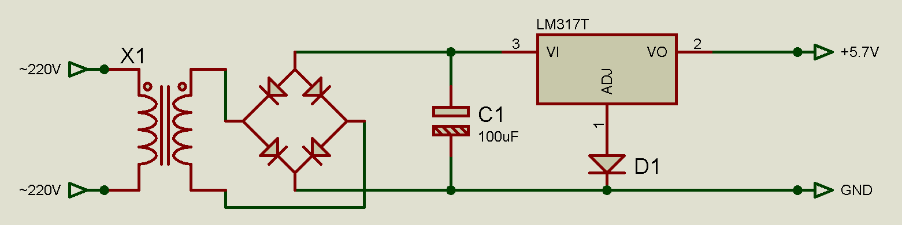
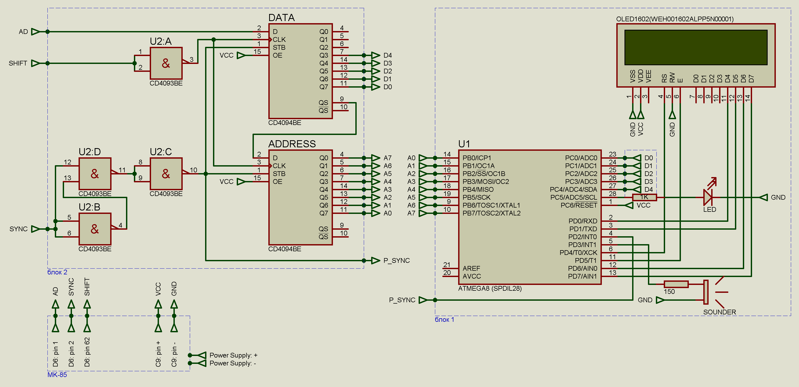
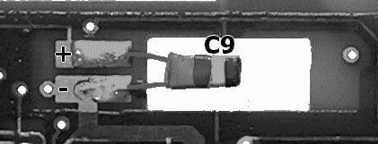
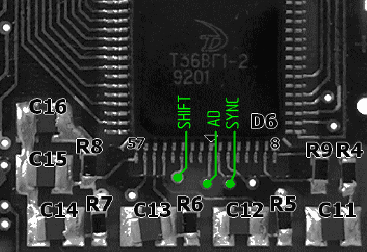

~~~~~~~~~~~~~~~~~~~~~~~~~~~~~~~~
Дисплей для "Электроника МК-85".
~~~~~~~~~~~~~~~~~~~~~~~~~~~~~~~~
элементы питания из калькулятора извлечены.
работа калькулятора с элементами питания на данном этапе разработки не предусмотрена.
блоки 1, 2 запитаны от конденсатора C9 платы МК-85.
Напряжение питания процессора калькулятора 5.0V.
------------------------------------------------------
электрическая схема блока питания:

диод D1 - КД521А
или
диод D1 блока питания и диод VD1 калькулятора - кремниевые с одной партии.
Дисплей.
------------------------------------------------------

подключение к плате МК-85:
питание шина передачи данных
C9: pin - D6: pin 1 AD
C9: pin + D6: pin 2 SYNC
D6: pin 62 SHIFT
 
Конфигурация фьюзов контроллера ATmega8.
------------------------------------------------------
- подключить программатор USBasp и кварцевый резонатор к контроллеру.
выполнить: avrdude -p atmega8 -c usbasp -U hfuse:w:0xd9:m -U lfuse:w:0xe4:m
...или, иным образом прошить фьюзы.
Интеграция проекта в Arduino IDE.
------------------------------------------------------
в файл boards.txt добавить секцию:
#######################################
M8_8.name = ATmega8 - 8MHz
M8_8.upload.tool = avrdude
M8_8.upload.maximum_size = 8192
M8_8.upload.maximum_data_size = 1024
M8_8.build.mcu = atmega8
M8_8.build.f_cpu = 8000000L
M8_8.build.core = arduino
M8_8.build.variant = pins_atmega8
#######################################
взять отсюда папки
в папку *\variants\ скопировать папку:
*\pins_atmega8\
в папку со скетчами скопировать папку:
*\MK-85_CD4094BE_ATmega8_OLED1602\
перезагрузить Arduino IDE, выбрать плату "ATmega8 - 8MHz", выбрать программатор,
открыть скетч, загрузить с помощью программатора.
вопросы можно задавать сюда
------------------------------------------------------